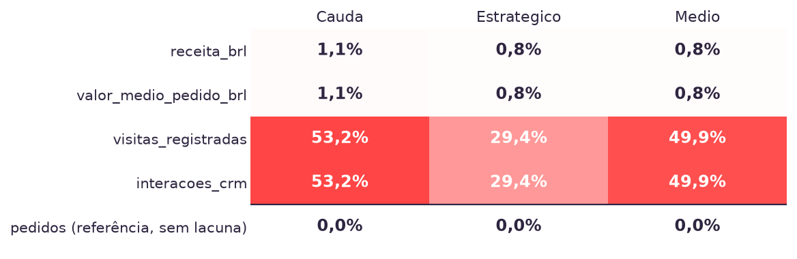
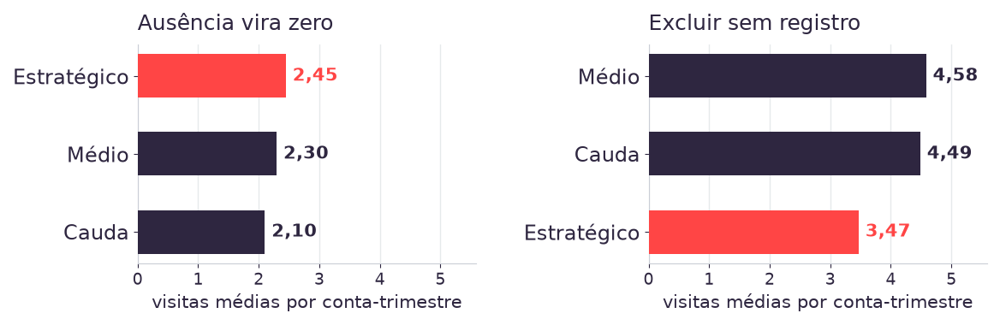

34
rupturas no segmento estratégico, referência
1.652
observações conta-trimestre no segmento
160
linhas do painel sem receita registrada
0
decisões de tratamento escritas por alguma mesa
O critério aplicado
Zero pedidos faturados em dois trimestres consecutivos.
A pergunta de abertura
O que cada mesa fez com as linhas sem receita registrada?
O que sobrou da Aula 01
Três contagens, nenhuma com o tratamento que a produziu.
A divergência entra hoje como insumo, e a tarde mede quanto cada decisão de tratamento vale em número.
Fonte: painel Kovan, 16.618 registros conta-trimestre e 1.187 contas. Contagem de ruptura construída na Aula 01.
Receita ausente
160 linhas sem receita_brl, 14 delas no segmento estratégico.
Engajamento ausente
8.280 linhas sem visitas_registradas nem interacoes_crm.
Quebra de taxonomia
linhas_produto_ativas muda de régua em 2023Q1, com salto de 98,5%.
Sinal das devoluções
devolucoes_brl tem 15.999 valores negativos e nenhum positivo.
Advertência sem decisão registrada conta como decisão de manter o dado como veio, e entra no registro com esse nome.
Fonte: Exhibit 3 do Caderno Kovan PL-02-2026 v2, medido sobre as 16.618 linhas entregues.
Passo 1
Perfilar
Quais colunas existem, quantos valores faltam e onde a lacuna se concentra.
Passo 2
Decidir
O que fazer com cada defeito, escrito antes de recalcular qualquer indicador.
Passo 3
Medir
O indicador recalculado sob cada alternativa de tratamento, no mesmo código.
Passo 4
Registrar
O arquivo que outra pessoa executa e obtém o mesmo número.
A análise exploratória da Aula 03 recebe o resultado destes quatro passos, junto com todo defeito que eles deixarem passar.
Completude
160 linhas sem receita e 8.280 sem engajamento.
Validade
devolucoes_brl chega com sinal negativo.
Consistência
taxonomia_mix muda de régua em 2023Q1.
Unicidade
16.618 linhas, 1.187 contas, sem duplicata.
Acurácia
Visita ausente do CRM contra visita que não ocorreu.
Temporalidade
Janela de 2022Q3 a 2025Q4, em duas réguas de mix.
Quatro das seis dimensões têm defeito documentado neste painel.
20
minutos
- Formato
- Em grupo, uma tela por grupo
- Entrega
- A lista de defeitos que a IA apontou sozinha, e o que ela deixou passar
- Checkpoint
- Aos 14 minutos, as quatro advertências em voz alta
Suba o painel no Gemini e peça o perfil coluna a coluna.
Perfile este CSV coluna a coluna: tipo, valores ausentes, valores distintos, mínimo e máximo. Devolva o código que produziu cada número.
Acrescente a restrição contra preenchimento.
Não preencha nenhuma lacuna e não estime nenhum valor. Se faltar informação para responder, diga que falta.
Marque quais defeitos ela apontou por conta própria.
São quatro no Exhibit 3. Anote quantos apareceram sem você citar.
Confira um número do perfil rodando a contagem você mesmo.
Comece pela contagem de linhas sem receita registrada.
O grupo sabe qual advertência a IA deixou passar.
160
linhas sem receita_brl, de 16.618
Ativa
status de conta das 160, sem exceção
14
dessas linhas no segmento estratégico
160
linhas sem valor_medio_pedido_brl
Onde a lacuna cai
Nos 14 trimestres, sempre em conta ativa.
O que ela arrasta
O valor médio do pedido some nas mesmas 160 linhas.
O que ela exige
Nomear o mecanismo antes de escolher o tratamento.
Descartar a linha remove trimestre de conta que seguia comprando.
Fonte: painel Kovan, colunas receita_brl e valor_medio_pedido_brl.

Taxa de ausência que muda com uma coluna observada indica ausência condicionada.
Estratégico
29,4% das linhas sem visita nem interação registrada.
Médio
49,9%.
Cauda
53,2%.
Total
8.280 das 16.618 linhas do painel.
A taxa de ausência acompanha o segmento, de modo que preencher a lacuna com zero desloca mais as contas de cauda do que as estratégicas.
Fonte: painel Kovan, 16.618 registros conta-trimestre. Exhibit 3, advertência 2 de 4.
A erosão real de mix é a queda de 30,4%, e a janela inteira registra alta de 38%.
| Operação | Código | Receita líquida do painel |
|---|---|---|
| Somar a coluna | receita_brl + devolucoes_brl | R$ 8,298 bi |
| Subtrair a coluna | receita_brl - devolucoes_brl | R$ 8,515 bi |
| Diferença entre as duas leituras | duas vezes a soma das devoluções | R$ 217,4 milhões |
Um sinal trocado em uma linha de código move 2,59% da receita do painel.
Fonte: painel Kovan, receita bruta de R$ 8,406 bi. Exhibit 3, advertência 4 de 4.
A média de linhas de produto passou de 1,85 para 3,67 entre 2022Q4 e 2023Q1. O que aconteceu com a carteira?
- A média por trimestre
- linhas_produto_ativas
- O salto
- +98,5%
- A coluna taxonomia_mix
- pre_2023 em 2022Q3 e 2022Q4
20
minutos
- Formato
- Em grupo, uma tela por grupo
- Entrega
- A taxa de ausência de engajamento por segmento, com o código
- Checkpoint
- Aos 14 minutos, comparação das taxas entre as mesas
Peça a taxa de ausência de visitas por segmento.
Calcule a proporção de linhas com visitas_registradas ausente, por segmento. Devolva o código pandas e a tabela.
Compare as três taxas entre si.
Taxas iguais entre segmentos indicariam ausência aleatória.
Teste se a ausência depende de outra coluna observada.
A ausência de visitas_registradas depende de status_conta ou de trimestre? Mostre a tabela e o código.
Escreva uma frase dizendo de que coluna a ausência depende.
A frase vai para a skill de limpeza do grupo, na Prática 4.
O grupo sabe de que coluna a ausência depende.
| Mecanismo | Do que a ausência depende | Consequência |
|---|---|---|
| MCAR, completamente ao acaso | De nada registrado na base | Excluir preserva a média e reduz a amostra |
| MAR, ao acaso dado o observado | De coluna observada, o segmento | Excluir enviesa a média; condicionar ao segmento corrige |
| MNAR, não ao acaso | De informação fora da base | Nenhuma correção com as colunas disponíveis |
A escolha do tratamento depende do mecanismo, e o segmento é coluna presente no painel.
Fonte: painel Kovan. Rubin, Biometrika, 1976.
Excluir
Assume que a linha ausente não carrega informação sobre o fenômeno medido.
Custo: a amostra encolhe, e o viés entra quando a ausência depende do segmento
Imputar
Assume um valor para a lacuna e passa a tratar esse valor como observado.
Custo: zero, mediana da conta e média do segmento produzem três séries distintas
Sinalizar
Mantém a linha e acrescenta uma coluna que marca o registro como ausente.
Custo: a coluna nova precisa entrar em toda análise seguinte
A escolha entre as três precisa estar escrita ao lado do número que ela produziu, com o custo medido junto.
01 Escolher o indicador
O número que vai para a recomendação, com o recorte declarado.
02 Recalcular
O mesmo código, trocando apenas a linha que aplica o tratamento.
03 Registrar a diferença
Em ponto percentual, em contagem de eventos ou em posição no ranking.
04 Declarar a escolha
Qual alternativa entra no entregável, e o que ela assume sobre a lacuna.
A Prática 3 aplica os quatro passos às visitas médias por segmento, com metade da sala em cada alternativa.
30
minutos
- Formato
- Trios, metade da sala em cada tratamento
- Entrega
- Visitas médias por segmento, nos três segmentos
- Checkpoint
- Os dois quadros no projetor, lado a lado
Mesas 1 e 2: preencher a ausência de visitas com zero
Trate visitas_registradas ausente como 0 e calcule a média por segmento. Mostre o código.
Mesas 3 e 4: excluir as linhas sem registro de visita
Descarte as linhas em que visitas_registradas está ausente e calcule a média por segmento. Mostre o código.
Escrever os três números no quadro da sua metade
Cauda, Médio e Estratégico, com duas casas decimais.
Defender a leitura para a outra metade
Qual recomendação sobre cobertura comercial o seu número sustenta?
Cada metade consegue dizer qual decisão de tratamento produziu o seu número.

O que decide entre as duas leituras é o mecanismo de ausência medido na Prática 2.
As duas mesas mediram visitas por segmento na mesma base. Por que as ordens divergiram?
- O arquivo
- o mesmo nas duas mesas
- O que divergiu
- a ordem
- A coluna
- visitas_registradas
| Critério | Gemini | Antigravity |
|---|---|---|
| Unidade de trabalho | Mensagem numa conversa | Arquivo numa pasta |
| Instalação | Nenhuma | Aplicativo desktop com login |
| Ciclo de resposta | Segundos | Minutos, com plano e execução |
| O que sobra ao fechar | Histórico de conversa | Script, base tratada e log |
| Reexecutável por terceiro | Ausente | Disponível |
O critério é a persistência do trabalho, e a skill em Markdown carrega a última linha entre os dois.
# Skill: limpeza do painel Kovan
## Entrada
kovan_painel_contas.csv, 16.618 linhas
## Decisões, uma por advertência
- receita_brl ausente, 160 linhas
tratamento:
custo medido:
- visitas_registradas, 8.280 linhas
- taxonomia_mix, quebra em 2023Q1
- devolucoes_brl, sinal negativo
## Saída
base tratada e tabela de custosTrês seções obrigatórias
Entrada nomeia o arquivo e a contagem de linhas que o agente deve encontrar.
Decisões traz uma linha por advertência, com o tratamento e o número que ele produziu.
Saída declara o que a execução precisa deixar em disco.
Markdown puro: entra nos dois ambientes.
A omissão de uma advertência equivale a manter o dado como veio.
30
minutos
- Formato
- Em grupo, um arquivo por grupo
- Entrega
- A skill preenchida, com as quatro decisões e o custo medido de cada uma
- Checkpoint
- Aos 20 minutos, conferir o número contra o da Prática 3
Abra o esqueleto e preencha uma linha por advertência.
Receita ausente, engajamento ausente, quebra de taxonomia e sinal das devoluções.
Escreva o custo medido ao lado de cada decisão.
Número, unidade e o recorte sobre o qual foi medido.
Cole o arquivo inteiro na conversa e rode contra a base crua.
Siga este arquivo passo a passo sobre o CSV anexado. Devolva o código e a tabela de custos.
Confira as visitas médias por segmento contra as da Prática 3.
Divergência indica que a skill descreve um tratamento diferente do que o grupo aplicou.
A skill executada por quem não a escreveu devolve os mesmos números que o grupo apresentou na Prática 3.
15/08 · hoje
Fica pronto
Base tratada, o custo das quatro decisões e a skill em Markdown que reproduz os dois.
22/08 · Aula 03
Análise univariada e bivariada
Distribuições, relações entre colunas e o rótulo de erosão em três cortes de limiar, sobre a base tratada hoje.
Aula 04
Visualização para decidir
Os quadros que vão ao Comitê saem dos números que a skill do grupo reproduz.
Semana 5 · 05/09
Artefato 1
Análise Exploratória de Dados, com o registro de tratamento anexado.
A Aula 03 recebe a base com as decisões escritas, de modo que uma divergência de número entre grupos passa a ter onde ser localizada.
Caso e dados
1. Kovan Technologies LATAM: A Definição do Alvo. Business case PL-02-2026, versão v2. As quatro advertências de qualidade estão no Exhibit 3.
Método
2. Rubin. Inference and missing data, Biometrika, 1976. 3. Little e Rubin. Statistical Analysis with Missing Data, Wiley, 2019.
4. Wirth e Hipp. CRISP-DM, 2000. 5. Tukey. Exploratory Data Analysis, 1977.
Decisões do módulo
6. ADR-003: Gemini como ambiente das práticas, Antigravity como demonstração.
7. ADR-004: a skill de agente em Markdown como artefato do aluno.
As seis dimensões de qualidade foram organizadas neste módulo a partir da literatura de data quality, sem seguir um padrão publicado. Cada número citado hoje é reproduzível por dados/tests/test_aula02_numeros.py.